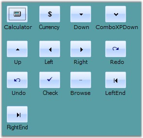
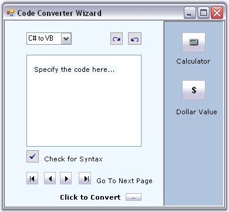
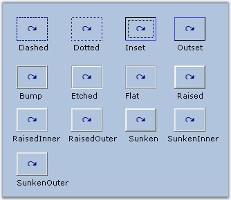
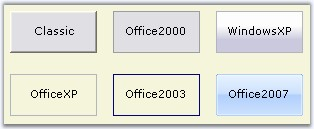
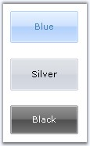
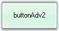
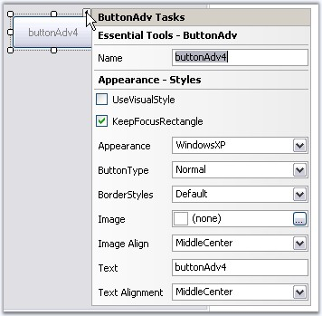
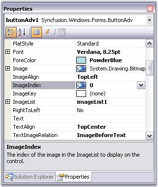
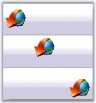

The following topics will help you become more familiar in using the ButtonAdv control.
This section will walk you through the below topics which discusses the properties that controls the appearance of the ButtonAdv.
ButtonAdv control supports different button types in terms of its appearance. It is specified using the ButtonType property.
|
Property |
Description |
|
ButtonType |
Specifies the button type to be used in the ButtonAdv control. The options are as follows.
Normal - Normal button. (user can specify the image with this ButtonType). Calculator - Calculator image is used. Currency - Currency image is used. Down - Down image is used. ComboXPDown - Down image like in a Windows XP combo box. Up - Up image is used. Left - Left image is used. Right - Right image is used. Redo - Redo image is used. Undo - Undo image is used. Check - Check image is used. Browse - Browse image is used. LeftEnd - Left end image is used. RightEnd - Right end image is used. |
 Note: You can also specify your own image
for the ButtonAdv using Image property and this will effect only when ButtonType
is set to Normal. See Image Settings to know more.
Note: You can also specify your own image
for the ButtonAdv using Image property and this will effect only when ButtonType
is set to Normal. See Image Settings to know more.
|
[C#]
//Setting Calculator button type this.ButtonAdvControl.ButtonType=Syncfusion.Windows.Forms.Tools.ButtonTypes.Calculator; |
|
[VB.NET]
'Setting Calculator button type Me.ButtonAdvControl.ButtonType = Syncfusion.Windows.Forms.Tools.ButtonTypes.Calculator |

Figure 148: Button Types for ButtonAdv Control
Note: The ButtonTypes are only provided for
ease of use and do not in any way change the functionality of the
buttons.
Example - A sample image which uses most of the button types in a single application is as follows. User will have to add respective functionalities for each button type.

Figure 149: Button Types Implemented in a Sample
Border style for the ButtonAdv control is specified in the below property.
|
Property |
Description |
|
BorderStyleAdv |
Specifies the border style for ButtonAdv control. The styles are,
None, Default, Dashed, Dotted, Inset, Outset, Solid, Bump, Etched, Flat, Raised, RaisedInner, RaisedOuter, Sunken, SunkenInner and SunkenOuter. |
Note: This setting will be effective only
for Office2003, OfficeXP and WindowsXP styles set through ButtonAdv.Appearance
property. See Visual Styles.
|
[C#]
//Sample code for setting "SunkenOuter" Border Style using BorderStyleAdv this.buttonAdv13.BorderStyleAdv = Syncfusion.Windows.Forms.ButtonAdvBorderStyle.SunkenOuter; |
|
[VB.NET]
//Sample code for setting "SunkenOuter" Border Style using BorderStyleAdv Me.buttonAdv13.BorderStyleAdv = Syncfusion.Windows.Forms.ButtonAdvBorderStyle.SunkenOuter |

Figure 150: "Redo" ButtonType, ButtonAdvControls with Different Border Styles (Appearance="Office2003")
See Also
Visual Styles for the ButtonAdv control can be enabled using UseVisualStyle property. The different visual style are specified through Appearance.
|
Property |
Description |
|
Appearance |
Sets the visual styles for the control when UseVisualStyle property is true. The styles are,
Classic, Office2000, WindowsXP, OfficeXP, Office2003 and Office2007. |
|
[C#]
this.buttonAdv1.UseVisualStyle = Syncfusion.Windows.Forms.UseStyle.True; //Sample code for setting "OfficeXP" style for ButtonAdv this.buttonAdv1.Appearance = Syncfusion.Windows.Forms.ButtonAppearance.OfficeXP; |
|
[VB.NET]
Me.buttonAdv1.UseVisualStyle = Syncfusion.Windows.Forms.UseStyle.True 'Sample code for setting "OfficeXP" style for ButtonAdv Me.buttonAdv1.Appearance = Syncfusion.Windows.Forms.ButtonAppearance.OfficeXP |

Figure 151: Visual Styles for ButtonAdv
Note: While mouse hovering over the
OfficeXP, Office2003 and WindowsXP at run time, the button will be painted with
some standard colors. This is an inbuilt feature in the
ButtonControlAdv.
Office Color Themes
ButtonControlAdv supports all the three OfficeColor Schemes when ButtonAdv.Appearance is set to Office2007. Similarly you can set Blue and Black color schemes also. Default value is Blue.
|
[C#]
//Sample code for setting "Silver" color scheme for ButtonAdv this.buttonAdv1.Office2007ColorScheme = Syncfusion.Windows.Forms.Office2007Theme.Silver; |
|
[VB.NET]
'Sample code for setting "Silver" color scheme for ButtonAdv Me.buttonAdv1.Office2007ColorScheme = Syncfusion.Windows.Forms.Office2007Theme.Silver |

Figure 152: Office Color Schemes for ButtonAdv Control
Custom Colors
We can also apply custom colors to the ButtonAdv control by setting Office2007ColorScheme to "Managed" and specifying the custom color through the ApplyManagedColors method as follows.
|
[C#]
this.buttonAdv1.Office2007ColorScheme = Syncfusion.Windows.Forms.Office2007Theme.Managed; Office2007Colors.ApplyManagedColors(this, Color.LightGreen); |
|
[VB.NET]
Me.buttonAdv1.Office2007ColorScheme = Syncfusion.Windows.Forms.Office2007Theme.Managed Office2007Colors.ApplyManagedColors(this, Color.LightGreen) |

Figure 153: CustomColor = "LightGreen"
See Also
3.3.2.1.3.1.4 Foreground Settings
Text for the ButtonAdv can be customized using the below properties.
|
Properties |
Description |
|
Text |
Sets the text for the ButtonAdv control. |
|
TextAlign |
Sets the alignment of the text in the control. The options are,
TopLeft, TopCenter, TopRight, MiddleLeft, MiddleCenter, MiddleRight, BottomLeft, BottomCenter and BottomRight. |
|
TextImageRelation |
Sets the relative location of the image to the text. The options are,
Overlay, ImageBeforeText, TextBeforeImage, ImageAboveText and TextAboveImage. |
|
Font |
Sets the font style for the control's text. |
|
ForeColor |
Sets the fore color for the control's text. |
|
[C#]
this.buttonAdv1.Text = "Image above Text"; this.buttonAdv4.TextAlign = System.Drawing.ContentAlignment.BottomCenter; this.buttonAdv4.TextImageRelation = TextImageRelation.ImageAboveText;
this.buttonAdv1.Font = new System.Drawing.Font("Verdana", 8.25F, System.Drawing.FontStyle.Regular); this.buttonAdv1.ForeColor = System.Drawing.Color.White; |
|
[VB.NET]
Me.buttonAdv4.Text = "Image above Text" Me.buttonAdv4.TextAlign = System.Drawing.ContentAlignment.BottomCenter Me.buttonAdv4.TextImageRelation = TextImageRelation.ImageAboveText
Me.buttonAdv1.Font = New System.Drawing.Font("Verdana", 8.25F, System.Drawing.FontStyle.Regular) Me.buttonAdv1.ForeColor = System.Drawing.Color.White |
Figure 154: ButtonAdv with Foreground Settings
ButtonAdv control has Smart Tag, which lets you set the properties easily.
Smart Tag Options

Figure 155: Tasks Window accessed using Smart Tag of ButtonAdv
The various settings through this window is as follows.
· Name - Lets you edit the control text.
· UseVisualStyle - Enables visual style settings.
· KeepFocusRectangle - Specifies whether to show focus rectangle or not.
· Appearance - Lets you to set the Visual style for the control.
· ButtonType - Lets you to set the button type.
· BorderStyles - Lets you to set the border styles for the control.
· Image - Lets you to set the image for the ButtonAdv control.
· ImageAlign - Sets the image alignment within the control.
· Text - Sets the text for button.
· Text Alignment - Sets the alignment of the text.
ButtonAdv supports two types of images. They are,
· BackgroundImage
· Image
BackgroundImage
BackgroundImage is the image used as the Background for the control, which is set using the BackgroundImage property. This BackgroundImage can be laid in various manner with the BackgroundImageLayout property.
Figure 156: Background Image for ButtonAdv
Image
Image that will be displayed on the control.
Figure 157: Image for ButtonAdv
The Images can be added to the ButtonAdv control in two ways. Either Image property can be used or the below properties.
|
Properties |
Description |
|
ImageList |
Sets the imagelist used for this control. |
|
ImageAlign |
Sets the alignment of the image inside the control. The options are,
TopLeft, TopCenter, TopRight MiddleLeft, MiddleCenter, MiddleRight, BottomLeft, BottomCenter and BottomRight. |
|
ImageIndex |
Specifies the index for the image in the control. |
|
Text |
Sets the text for the ButtonAdv. |
|
TextAlign |
Sets the alignment of the text in the control. The options are,
TopLeft, TopCenter, TopRight MiddleLeft, MiddleCenter, MiddleRight, BottomLeft, BottomCenter and BottomRight. |
|
TextImageRelation |
Sets the relative location of the image to the text. The options are,
Overlay, ImageBeforeText, TextBeforeImage, ImageAboveText and TextAboveImage. |

Figure 158: Image Settings For ButtonAdv
Note: The Image settings will be
effective only when ButtonType is set to Normal.
|
[C#]
this.btnAlignment.Image = ((System.Drawing.Bitmap)(resources.GetObject("btnAlignment.Image"))); this.btnAlignment.ImageAlign = System.Drawing.ContentAlignment.MiddleLeft; this.btnAlignment.ImageIndex = 3; this.btnAlignment.ImageList = this.imageList1; |
|
[VB.NET]
Me.btnAlignment.Image = CType((resources.GetObject("btnAlignment.Image")), System.Drawing.Bitmap) Me.btnAlignment.ImageAlign = System.Drawing.ContentAlignment.MiddleLeft Me.btnAlignment.ImageIndex = 3 Me.btnAlignment.ImageList = Me.imageList1 |

Figure 159: Image Alignment: MiddleLeft; TopCenter; BottomRight